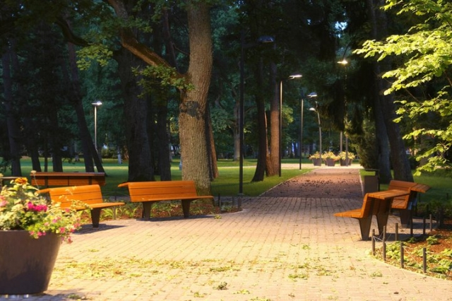

Suvepealinn Pärnu

Päikeseline Pärnu on Eesti Suvepealinnaks aastast 1996, kuid päike, meri ja rand on olnud kuurortlinna märksõnadeks palju kauem - tervelt 170 aastat. Kuurordi kõrval on Pärnu aga ka vana hansalinn, sadamalinn ja ülikoolilinn.
Pärnu ajalugu algab aastal 1251, kui linna esmakordselt mainiti. 14.-15. sajandil oli Pärnu tähtis hansalinn, 17. sajandil kuulus Rootsi võimu alla, 19. sajandil algas Pärnu kui kuurortlinna areng. 1996. aastal sai Pärnust Eesti suvepealinn ning 2005. aastal valis Briti ajaleht The Independent Pärnu ranna üheks atraktiivsematest Euroopas. Linna kirevast ajaloost annab hea ülevaate Pärnu Muuseum, kuid samuti võib linna ajalugu tunnetada igal sammul linnas ringi liikudes, tutvudes huvitava arhitektuuri ning erinevate vaatamisväärsustega.
Augustis toimub Pärnus Eesti üks hinnatuim klassikalise muusika festival - Pärnu Muusikafestival . Kõrge tase on saavutatud tänu Neeme ja Paavo Järvi suurele pühendumisele.